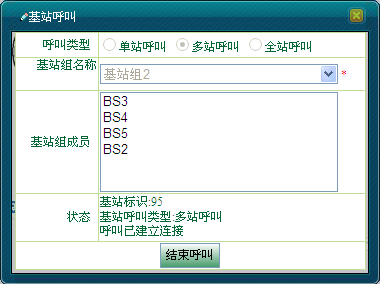
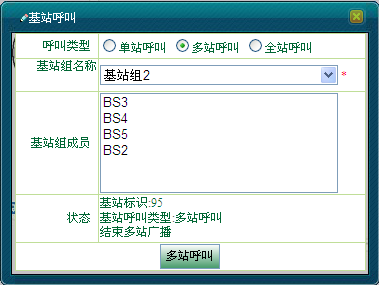

多站呼叫是指对多个基站发起广播呼叫，在该基站组覆盖范围内的终端都能接收到单向的呼叫。
 发起多站呼叫的具体操作步骤如下：
发起多站呼叫的具体操作步骤如下：
1）调度员可通过操作菜单栏上的［调度功能/呼叫面板］，在呼叫面板上选择“基站呼叫”，在弹出的“基站呼叫”对话框中选择“多站呼叫”，在基站组名称文本框中选择某一基站组，自动添加该基站组成员，单击＜多站呼叫＞，此时“多站呼叫”变为“结束呼叫”，显示如下图1所示。

图1. 发起多站呼叫
2）单击＜结束呼叫＞结束多站广播呼叫，此时，“结束呼叫”变为“多站呼叫”，如下图2所示。

图2. 结束多站呼叫
Copyright © 2012 Eastcom, Inc. All rights reserved. |
||